Continuous Delivery on AWS
Continous 'Delivery' on AWS.
🚀 Project Overview
The project involves a continuous integration and deployment (CI/CD) pipeline for software development on AWS. Here's an overview of the process:
-
Code Commit: Developers regularly commit code changes, which trigger the CI/CD pipeline.
-
CodeBuild Trigger: Commits trigger AWS CodeBuild, which initiates the build process.
-
Code Analysis: CodeBuild performs code analysis using Sonarcloud. SonarCloud (same as SonarQube) is a cloud-based code quality and security service provided by SonarSource. It integrates with Git repositories to analyze code for bugs, vulnerabilities, code smells, and other issues.
-
Dependency Management: Dependencies required for the project are downloaded from AWS CodeArtifact, ensuring consistency and reliability.
-
Artifact Building: CodeBuild utilizes Maven to build the artifact from the source code.
-
Artifact Storage: The built artifact is stored in an S3 bucket for future deployment.
-
Deployment: AWS Deploy deploys the artifact to an Elastic Beanstalk environment, ensuring scalability and ease of management.
-
Database Connection: The Beanstalk environment is connected to an RDS (Relational Database Service) instance for data storage and retrieval.
-
Software Testing: After deployment, software testing is executed using AWS CodeBuild services to verify the functionality and stability of the deployed application.
This CI/CD pipeline automates the software development process, from code commits to deployment, ensuring efficient and reliable delivery of software updates.
🔧 Problem Statement
In the context of software development on AWS, there exists a need to establish a robust and efficient continuous integration and deployment (CI/CD) pipeline. The current manual processes for code commits, code analysis, artifact building, and deployment are prone to errors, inconsistencies, and inefficiencies. To address these challenges, the objective is to design and implement an automated CI/CD pipeline that seamlessly integrates with AWS services. This pipeline should enable developers to commit code changes confidently, knowing that they will undergo thorough code analysis, dependency management, artifact building, and deployment processes. Additionally, the pipeline should facilitate seamless database connection, software testing, and scalability of deployed applications. The ultimate goal is to streamline the software development lifecycle, ensuring consistent, reliable, and timely delivery of software updates while minimizing manual intervention and maximizing resource utilization.
💽 Techonology Stack
● Application Integration: Simple Notification Service (SNS)
● Management & Governance: CloudWatch.
● Security, Identity & Compliance: Secret Manager, SonarCloud(SonarQube)
● CI/CD: Automate deployment using AWS Code Pipeline, AWS CodeBuild, AWS CodeCommit, AWS CodeArtifact
📌 Architecture Diagram
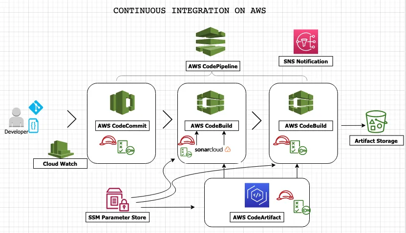
🚦 Getting Started
Prerequisites
Before you get started, make sure you have the following prerequisites in place:
- AWS account.
- AWS CLI.
- SonarCloud account.
- Git for cloning the repository.
📋 Table of Contents
- Step-1: Setup AWS CodeCommit
- Step-2: Setup AWS CodeArtifact
- Step-3: Setup SonarCloud
- Step-4: Store SonarCloud variables in System Manager Parameter Store
- Step-5: AWS CodeBuild for SonarQube Code Analysis
- Step-6: AWS CodeBuild for Build Artifact
- Step-7: AWS CodePipeline and Notification with SNS
- Step-8: Validate CodePipeline
- Step-9: Create Elastic Beanstalk environment
- Step-10: Create RDS MySQL Database
- Step-11: Update RDS Security Group
- Step-12: Use Beanstalk instance to connect RDS to deploy schemas
- Step-13: Update Code with pom & setting.xml
- Step-14: Build Job Setup
- Step-15: Create Pipeline
- Step-16: SNS Notification
- Step-17: Validate & Test
✨ Step-1-Setup-AWS-CodeCommit
- Go to AWS Console, and pick us-east-1 region then go to CodeCommit service. Create repository.
bash
Name: vprofile-code-repo
- Next, create an IAM user with CodeCommit access from IAM console. We will create a policy for CodeCommit and allow full access only for vprofile-code-repo.
bash
Name: vprofile-code-admin-repo-fullaccess
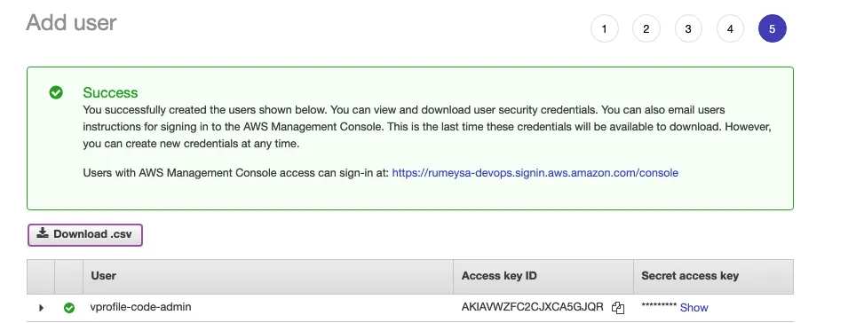
- To be able connect our repo, follow steps given in CodeCommit.
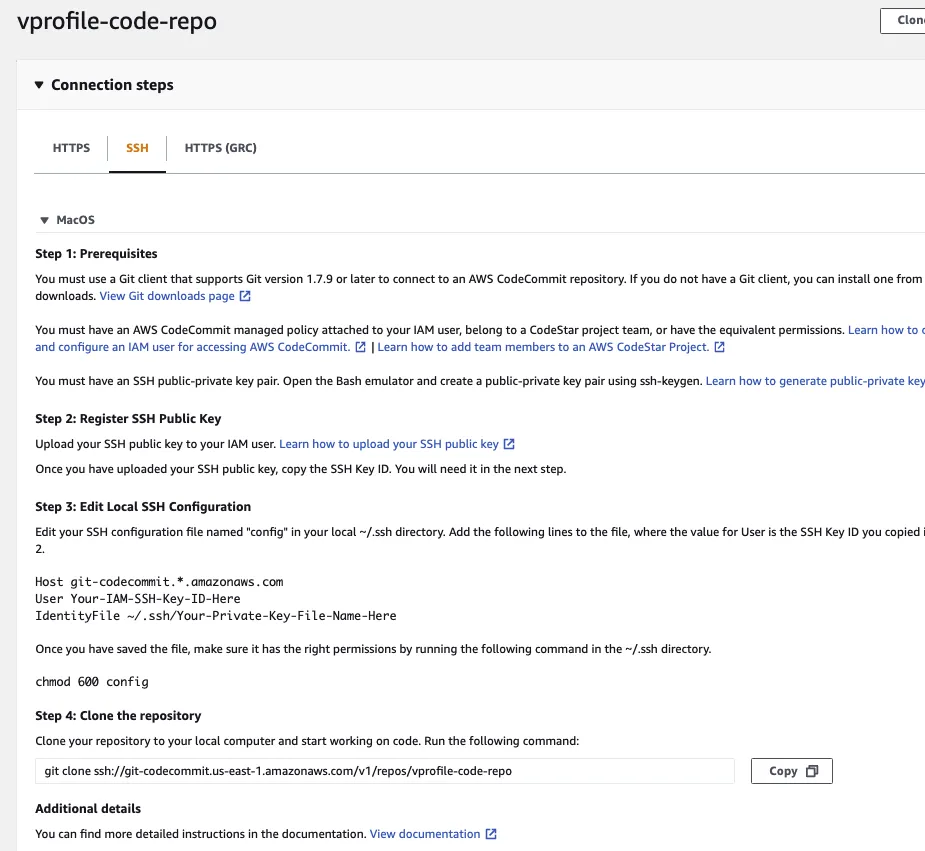
- Create SSH key in local server and add public key to IAM role Security credentials.
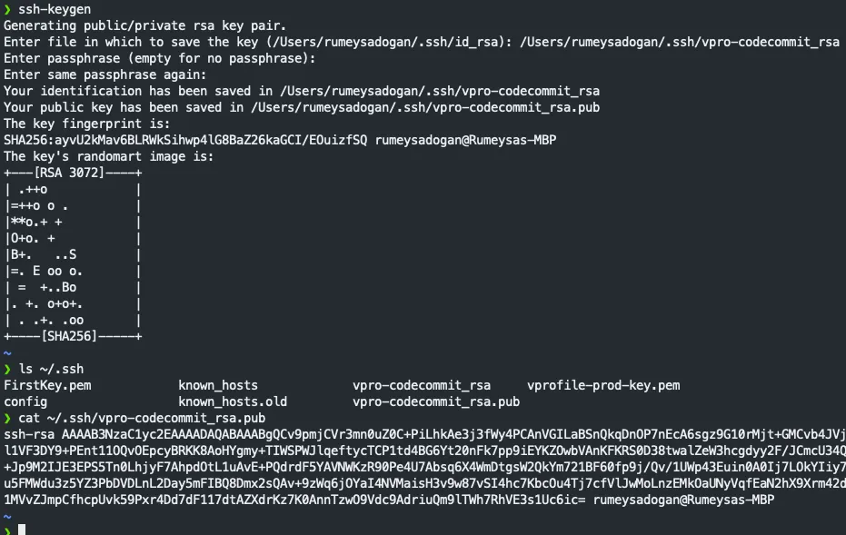
- Update configuration under .ssh/config and add our Host information. And change permissions with chmod 600 config
bash
Host git-codecommit.us-east-1.amazonaws.com
User <SSH_Key_ID_from IAM_user>
IdentityFile ~/.ssh/vpro-codecommit_rsa
- We can test our ssh connection to CodeCommit.
bash
ssh git-codecommit.us-east-1.amazonaws.com
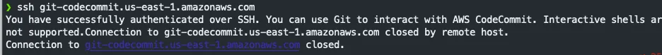
-
Next, clone the repository to a location of your choice in your local server.
-
Convert the Github repository for vprofile-project in your local server, to your CodeCommit repository. In Github repo directory.
-
Run the command below.
bash
git checkout master
git branch -a | grep -v HEAD | cur -d'/' -f3 | grep -v master > /tmp/branches
for i in `cat /tmp/branches`; do git checkout $i; done
git fetch --tags
git remote rm origin
git remote add origin ssh://git-codecommit.us-east-1.amazonaws.com/v1/repos/vprofile-code-repo
cat .git/config
git push origin --all
git push --tags
- Our repo is ready on CodeCommit with all branches.
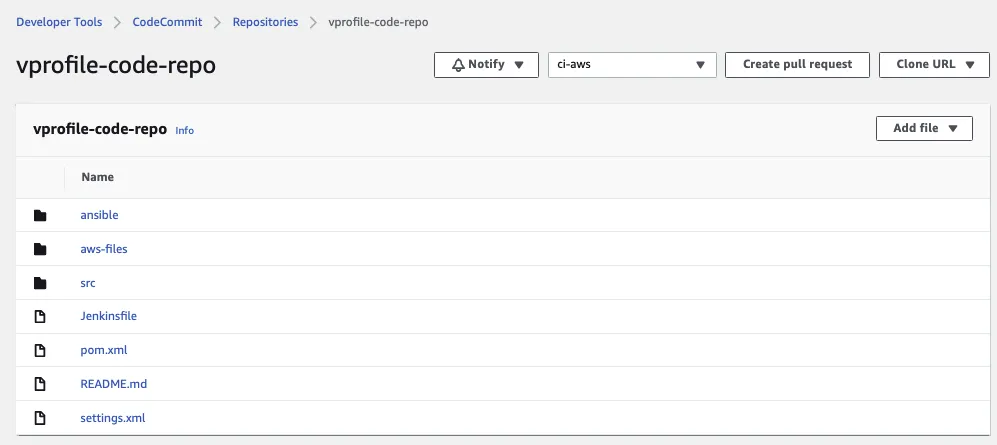
🌟 Step-2-Setup-AWS-CodeArtifact
- Create CodeArtifact repository for Maven:
bash
Name: vprofile-maven-repo
Public upstraem Repo: maven-central-store
This AWS account
Domain name: visualpath
- Follow connection instructions given in CodeArtifact for maven-central-repo.
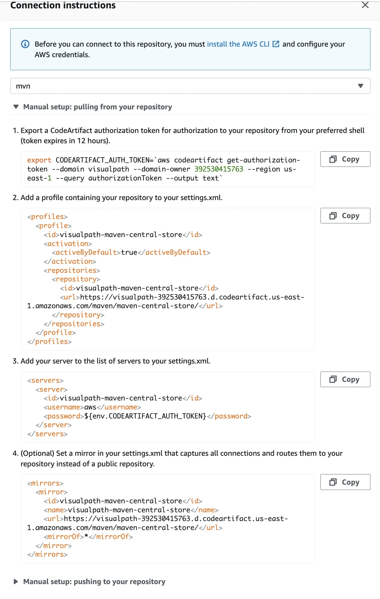
- Create an IAM user for CodeArtifact and configure aws CLI with its credentials. We will give Programmatic access to this user to enable use of aws cli and download credentials file.
bash
aws configure # provide iam user credentials
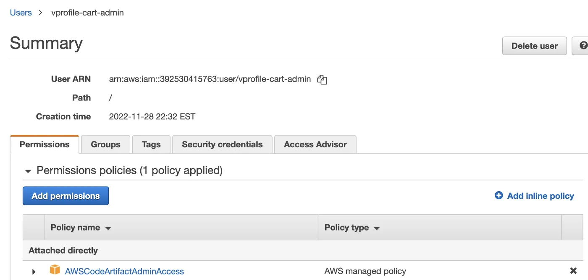
- Run command get token as in the instructions.
bash
export CODEARTIFACT_AUTH_TOKEN=`aws codeartifact get-authorization-token --domain visualpath --domain-owner 392530415763 --region us-east-1 --query authorizationToken --output text`
- Update pom.xml and setting.xml file with correct urls as suggested in instruction then push files to codeCommit.
bash
git add .
git commit -m "message"
git push origin ci-aws
🚀 Step-3-Setup-SonarCloud
-
Create an Account with SonarCloud. https://sonarcloud.io/
-
From account avatar -> My Account -> Security. Generate token name as vprofile-sonartoken. Note the token.
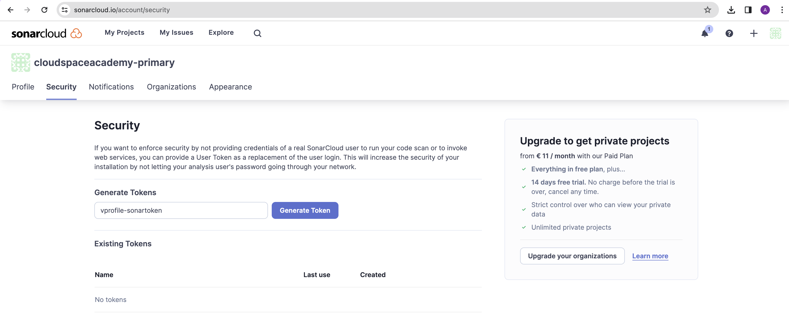
- Next we create a project, + -> Analyze Project -> create project manually. Below details will be used in our Build.
bash
Organization: kubeirving-projects
Project key: vprofile-repo8
- Sonar Cloud is ready!
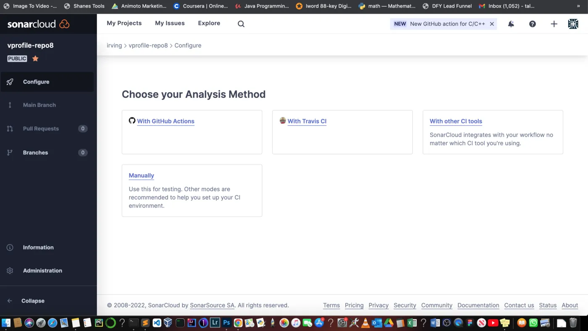
💽 Step-4-Store-Sonar-in-SSM-Parameter-Store
- Create parameters with the variables below.
bash
CODEARTIFACT_TOKEN SecureString
HOST https://sonarcloud.io
ORGANIZATION kubeirving-projects
PROJECT vprofile-repo8
SONARTOKEN SecureString
🔧 Step-5-CodeBuild-for-SonarQube
- From AWS Console, go to CodeBuild -> Create Build Project. This step is similar to Jenkins Job.
bash
ProjectName: Vprofile-Build
Source: CodeCommit
Branch: ci-aws
Environment: Ubuntu
runtime: standard:5.0
New service role
Insert build commands from foler aws-files/sonar_buildspec.yml
Logs-> GroupName: vprofile-buildlogs
StreamName: sonarbuildjob
- Update sonar_buildspec.yml file parameter store sections with the exact names we have given in SSM Parameter store.
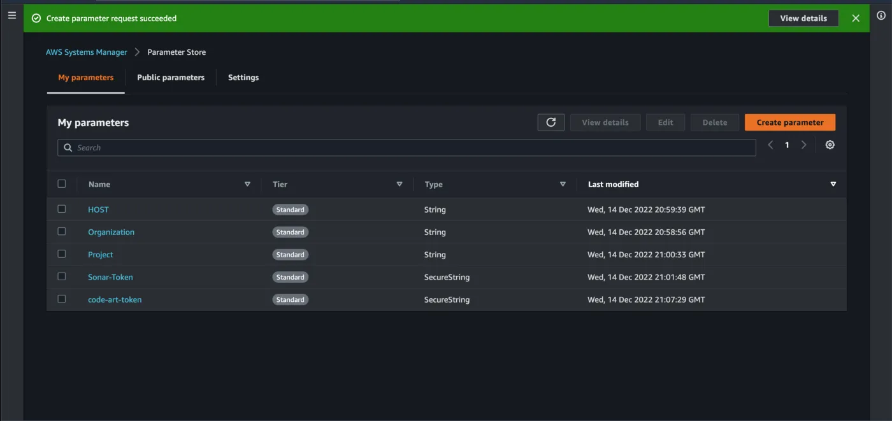
- Add a policy to the service role created for this Build project -> find name of role from Environment, go to IAM add policy as below:
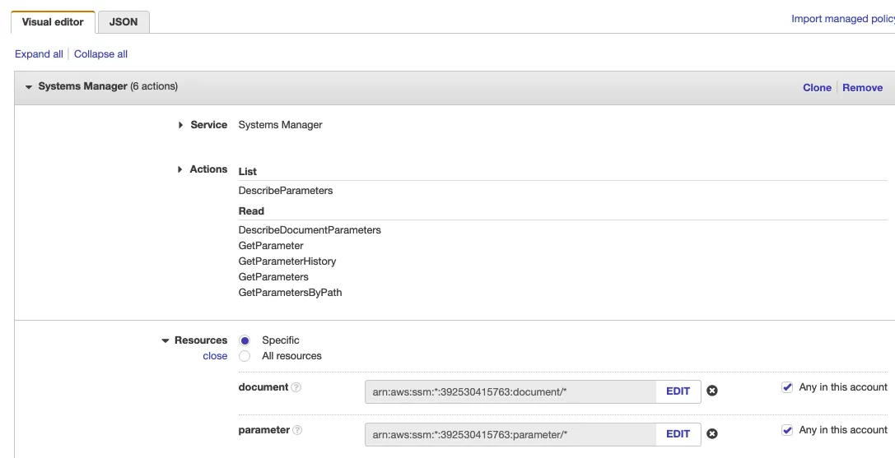
- Build your project.
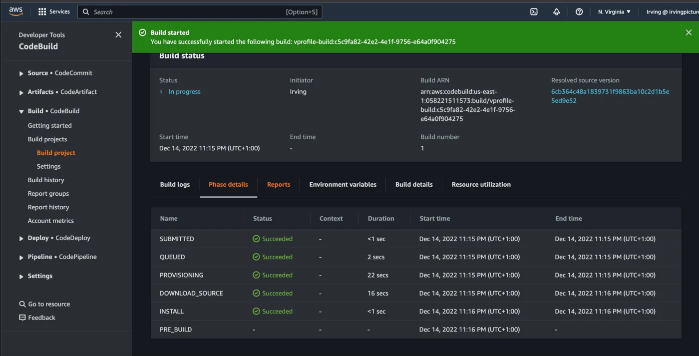 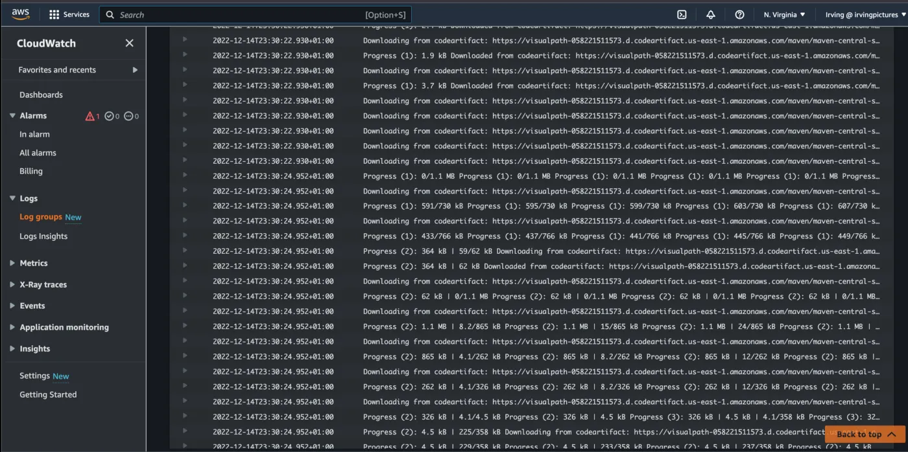
- Check from SonarCloud too.
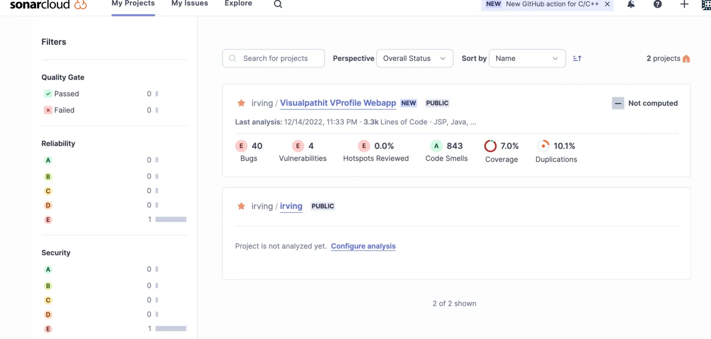
🚀 Step-6-CodeBuild-for-Build-Artifact
- From AWS Console, go to CodeBuild -> Create Build Project. This step is similar to Jenkins Job.
bash
ProjectName: Vprofile-Build-Artifact
Source: CodeCommit
Branch: ci-aws
Environment: Ubuntu
runtime: standard:5.0
Use existing role from previous build
Insert build commands from foler aws-files/build_buildspec.yml
Logs-> GroupName: vprofile-buildlogs
StreamName: artifactbuildjob
- It’s time to build project.
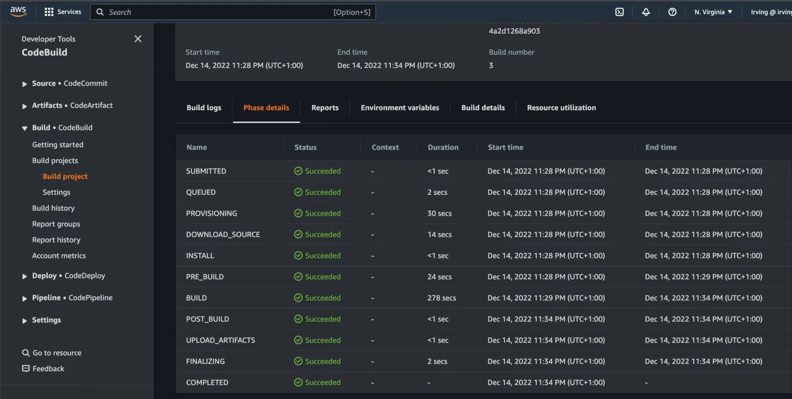
💼 Step-7-CodePipeline-and-Notification-with-SNS
- First we will create an SNS topic from SNS service and subscribe to topic with email.

- Confirm your subscription from your email.
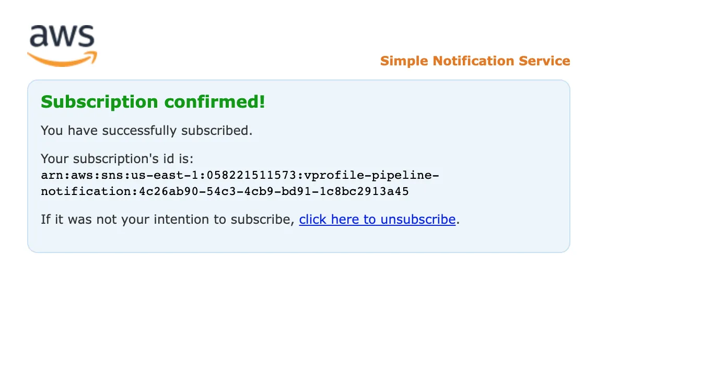
- Next, create an S3 bucket to store our deploy artifacts.
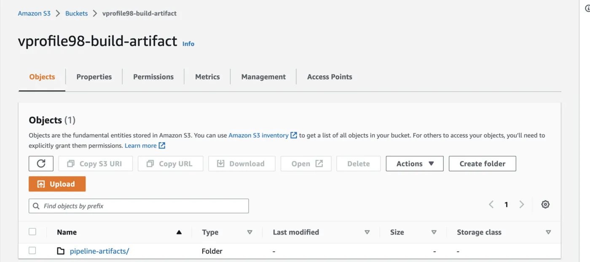
- Create CodePipeline.
bash
Name: vprofile-CI-Pipeline
SourceProvider: Codecommit
branch: ci-aws
Change detection options: CloudWatch events
Build Provider: CodeBuild
ProjectName: vprofile-Build-Aetifact
BuildType: single build
Deploy provider: Amazon S3
Bucket name: vprofile98-build-artifact
object name: pipeline-artifact
- Add Test and Deploy stages to your pipeline.
- Last step before running the pipeline is to setup Notifications.
- Go to Settings in CodePipeline -> Notifications.
- Time to run our CodePipeline.
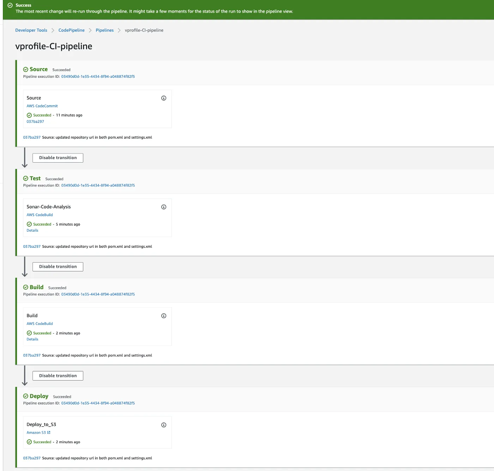
✅ Step-8: Validate CodePipeline
- Make some changes in README file in your source code, once this change is pushed, CloudWatch will detect the changes and a notification event will trigger Pipeline.
🌱 Step-9-Create-Elastic-Beanstalk-environment
Create an environment using Sample application.
bash
Name: vprofile-app
Capacity: LoadBalanced
Min: 2
Max: 4
Security: Choose existing key-pair usedin previous steps
Tags:
Name:Project
Value: vprofile
🗄️ Step-10-Create-RDS-MySQL-Database
- Create an RDS service with the details below.
- Don’t forget the click View credential details to note down your password.
bash
Engine: MySQL
version: 5.7
Free-Tier
DB Identifier: vprofile-cicd-mysql
credentials: admin
Auto generate password (will take note of pwd once RDS is created)
db.t2.micro
Create new SecGrp:
* Name: vprofile-cicd-rds-mysql-sg
Additional Configurations:
* initial db name: accounts
🔒 Step-11-Update-RDS-Security-Group
Go to instances, find BeanStalk instance and copy its Secgrp ID. Update RDS SecGrp Inbound rules to allow access for Beanstalk instances on port 3306.
🗄️ Step-12-Beanstalk-instance-to-connect-RDS-to-deploy-schemas
-
Although, SSH into your beanstalk instance to make changes is not a good practice as its better to create a new EC2 and perform these tasks, but for this project, we will make an exception.
-
Go to Beanstalk SecGrp group, and change access to port 22 from Anywhere to MyIP. Install mysql client in this instance to be able to connect RDS. We also need to install git since we will clone our source code and get scripts to create schema in our database.
bash
sudo -i
yum install mysql git -y
mysql -h <RDS_endpoint> -u <RDS_username> -p<RDS_password>
show databases;
git clone https://github.com/rumeysakdogan/vprofileproject-all.git
cd vprofileproject-all/
git checkout cd-aws
cd src/main/resources
mysql -h <RDS_endpoint> -u <RDS_username> -p<RDS_password> accounts < db_backup.sql
mysql -h <RDS_endpoint> -u <RDS_username> -p<RDS_password>
use accounts;
show tables;
Now go back to Beanstalk environment and under Configuration -> load balancer -> Processes , update Health check path to /login. Then apply changes.
💻 Step-13-Update-Code-with-pom-setting.xml
-
Go to CodeCommit, select cd-aws branch. We will do the same updates that we did in ci-aws branch to the pom & settings.xml files. We can directory select file and Edit in CodeCommit, then commit our changes.
-
For pom.xml, add the correct url from your code artifact connection steps:
bash
<repository>
<id>codeartifact</id>
<name>codeartifact</name>
<url>https://visualpath-392530415763.d.codeartifact.us-east-1.amazonaws.com/maven/maven-central-store/</url>
</repository>
for settings.xml, update below parts with correct url from code artifact.
bash
<profiles>
<profile>
<id>default</id>
<repositories>
<repository>
<id>codeartifact</id>
<url>https://visualpath-392530415763.d.codeartifact.us-east-1.amazonaws.com/maven/maven-central-store/</url>
</repository>
</repositories>
</profile>
</profiles>
<activeProfiles>
<activeProfile>default</activeProfile>
</activeProfiles>
<mirrors>
<mirror>
<id>codeartifact</id>
<name>visualpath-maven-central-store</name>
<url>https://visualpath-392530415763.d.codeartifact.us-east-1.amazonaws.com/maven/maven-central-store/</url>
<mirrorOf>*</mirrorOf>
</mirror>
</mirrors>
🔧 Step-14-Build-Job-Setup
- Go to CodeBuild and change Source for Vprofile-Build & Vprofile-build-Artifact projects. Currently these projects are triggered from ci-aws branch, we will change branch to cd-aws.
Create “BuildAndRelease” Build Project
Then we create a new project called Build Project for deploying artifacts to BeanStalk.
bash
Name: Vprofile-BuildAndRelease
Repo: CodeCommit
branch: cd-aws
Environment
*Managed image: Ubuntu
*Standard
Image 5.0
We will use existing role from previous Build project which has access to SSM Parameter Store
Insert build commands:
* From source code we will get spec file under `aws-files/buildAndRelease_buildspec.yml`.
Logs:
*LogGroup:vprofile-cicd-logs
*StreamnameBuildAndReleaseJob
We need to create 3 new parameters as used in BuilAndRelease_buildspec.yml file in SSM Parameter store. we have noted these values from RDS creation step, we will use them now.
bash
RDS-Endpoint: String
RDSUSER: String
RDSPASS: SecureString
Let’s run the project to know if successful!
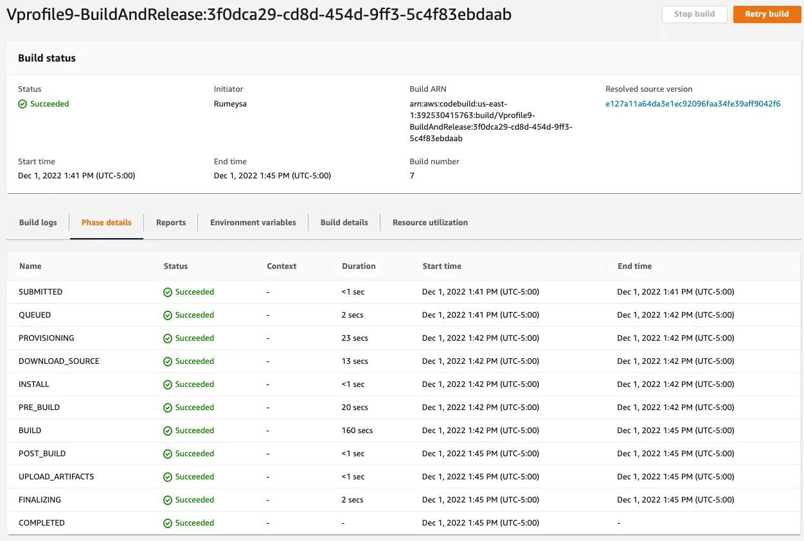
Create “SoftwareTesting” Build Project
In this Build Project, we will run our Selenium Automation scripts and store the artifacts in S3 bucket.
First, we will create an S3 bucket.
bash
Name: vprofile-cicd-testoutput-rd (give a unique name)
Region: it should be the same region we create our pipeline
Next, create a new Build project for Selenium Automation Tests. Create a new Build project with details below:
bash
Name: SoftwareTesting
Repo: CodeCommit
branch: seleniumAutoScripts
Environment:
* Windows Server 2019
* Runtime: Base
* Image: 1.0
We will use existing role from previous Build project which has access to SSM Parameter Store
Insert build commands:
* From source code we will get spec file under `aws-files/win_buildspec.yml`.
* We need to update url part to our Elastic Beanstalk URL.
Artifacts:
*Type: S3
* Bucketname: vprofile-cicd-testoutput-rd
* Enable semantic versioning
Artifcats packaging: zip
Logs:
*LogGroup: vprofile-cicd-logs
*Streamname:
⛓️ Step-15-Create-Pipeline
Create CodePipeline with name vprofile-cicd-pipeline
```bash Source: * CodeCommit * vprofile-code-repo * cd-aws * Amazon CloudWatch Events
Build
* BuildProvider: CodeBuild
* ProjectName: Vprofile-BuildAndRelease
* Single Build
Deploy
* Deploy provider: Beanstalk
* application: vprofile-app
* Environment: vprofile-app-env
```
bash
We will Disable transitions and Edit pipeline to add more stages.
Add this stage in our codepipeline after “Source”:
bash
Name: CodeAnalysis
Action provider: CodeBuild
Input artifacts: SourceArtifact
Project name: Vprofile-Build
Add second stage after CodeAnalysis:
bash
Name: BuildAndStore
Action provider: CodeBuild
Input artifacts: SourceArtifact
Project name: Vprofile-Build-artifact
OutputArtifact: BuildArtifact
Add third stage after BuildAndStore:
bash
Name: DeployToS3
Action provider: Amazon S3
Input artifacts: BuildArtifact
Bucket name: vprofile98-build-artifact
Extract file before deploy
Edit the ouput artifacts of Build and Deploy stages. Go to Build stage Edit Stage. Change Output artifact name as BuildArtifactToBean.
Go to Deploy stage, Edit stage. We change InputArtifact to BuildArtifactToBean.
Last Stage will be added after Deploy stage:
bash
Name: Software Testing
Action provider: CodeBuild
Input artifacts: SourceArtifact
ProjectName: SoftwareTesting
Save and Release change. This will start our CodePipeline.
🔔 Step-16-SNS-Notification
Select your pipeline. Click Notify, then Manage Notification. We will create a new notification.
bash
vprofile-aws-cicd-pipeline-notification
Select all
Notification Topic: use same topic from CI pipeline
🧪 Step-17-Validate&Test
Time to test our pipeline.
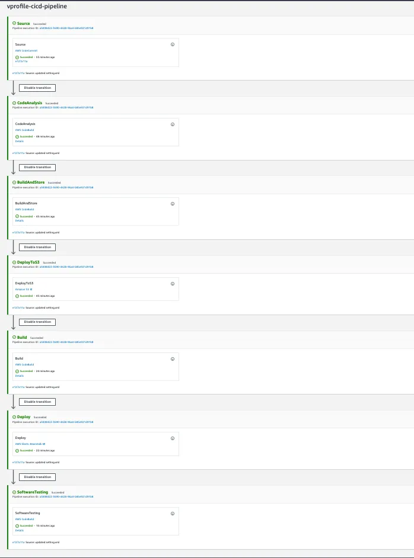
We can check the app from browser with Beanstalk endpoint to view result.
📄 License
This project is licensed under the MIT License.